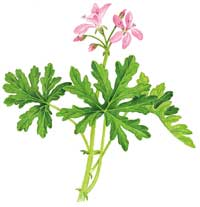
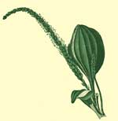

Since the 1999 appearance of mosquito-borne West Nile virus in North America, it’s more important than ever to keep these pests at bay. You can outsmart mosquitoes with this homemade, Earth-friendly solution.
Herbal Insect Repellent
2 1/2 teaspoons total of any combination of the following essential oils: basil, cedarwood, citronella, juniper, lemon, myrrh, palmarosa, pine, rose geranium and/or rosemary (available at health food stores)
1 cup 190-proof grain alcohol (available in liquor stores)
Place ingredients in a jar with a tight-fitting lid and shake vigorously. Transfer to small bottles for storage. To use, rub a small amount on any exposed skin (test first to be sure your skin will not be adversely affected by the repellent) or dab it on clothing.
Experiment a little to find which essential oils work best with your body chemistry. If you’re lucky, you also will like the way they smell; otherwise, add a few drops of peppermint oil to fine-tune the fragrance.
If you are bitten, follow this advice from James Duke, Ph.D., author of The Green Pharmacy. Plantain (Plantago, various species) is one of the best herbs to treat bug bites.
You probably won’t need to plant this home remedy because it is a very common weed, often growing in compacted soil along sidewalks and driveways. To use the plant as first aid for a mosquito bite, crush a few leaves and rub them on the bite. Visit the University of California’s Weed Photo Gallery for help identifying plantain.
Some anti-itch drugstore medicines to use include Calamine lotion or cortisone creams. Doctors generally recommend pain relievers, ice packs and meat tenderizer to treat insect bites and stings. Promptly applying a dab of commercial meat tenderizer directly to a sting can neutralize the allergen.
|
 Rose Geranium, Plantain |
 Rose Geranium, Plantain |
|